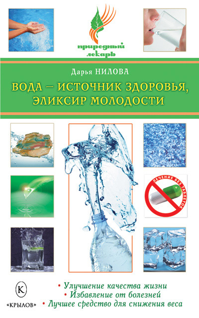

Вода , которая лечит.

По материалам книги " Вода – источник здоровья, эликсир молодости " ." Дарьи Юрьевны Ниловой . "
А также из других источников Интернет
Уважаемый Читатель - после ознакомления с Книгой
рекомендую Вам заказать ее бумажное издание.
Вода – источник жизни, энергии и здоровья. Она обладает памятью и способностью хранить информацию, поэтому, используя положительно заряженную воду, можно вернуть гармонию в свое тело, защитить себя от негативного энергетического влияния, исцелиться от многих недугов без применения дорогостоящих лекарств и процедур, всего лишь ежедневно выпивая стакан воды.
Какая бывает вода? Минеральная, магнитная, серебряная, кремниевая, шунгитная, морская… У каждого вида воды из этого списка свои особенности состава и воздействия на человеческий организм, свои целительные свойства. Познакомьтесь поближе с чудесными свойствами воды, подберите для себя подходящий метод лечения и верните здоровье, силу, красоту с помощью средства, которое всегда под рукой.
Книга адресована широкому кругу любознательных читателей.